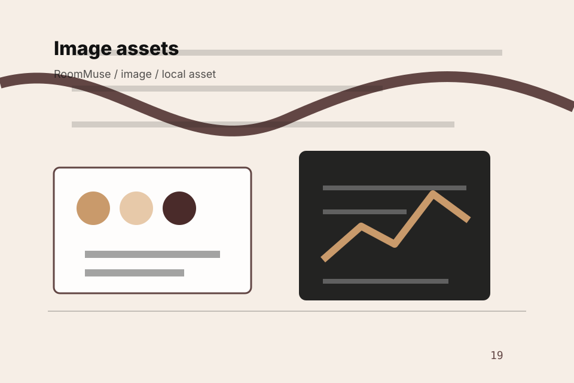

<!-- Source partial: Editorial room hero. -->
<section id="section-hero" class="section hero-section hero-editorial-room-hero composition-editorial-room-hero" data-section="Hero" data-composition="Editorial room hero" data-hero-type="Editorial room hero" data-track="section_home_hero">
  <div class="container hero-grid">
    <div class="hero-copy">
      <p class="eyebrow">Home / 01</p>
      <h1>RoomMuse</h1>
      <h2>A material-led interiors site with luxe moodboards, serif headlines, room selectors, and sourcing CTAs</h2>
      <p class="lead">RoomMuse brings material-led home warmth guidance to the opening route, with practical context for interiors, furniture &amp; home design decisions and a clear route to the next step.</p>
      <p>RoomMuse connects the opening route with practical proof, useful comparisons, and the questions interiors, furniture &amp; home design visitors bring to the page. Visitors can scan the essentials, understand the tradeoffs, and decide whether to start design or keep exploring. The rhythm is built for action without removing the context people need to trust the decision.</p>
      <div class="button-row">
        <a class="button primary" href="../contact.html" data-track="cta_home_hero">Start Design</a>
        <a class="button secondary" href="https://ash-tra.com/discovery/" data-track="secondary_home_hero">Discuss build</a>
      </div>
      
      <div class="hero-proof" aria-label="Trust notes">
        <span>Browse quickly</span><span>Compare clearly</span><span>Ask availability</span>
      </div>
<div class="container signature-panel signature-moodboard" data-signature="moodboard" data-page="home" data-section-key="hero">
    <div>
      <p class="eyebrow">Editorial room hero</p>
      <h3>Build the moodboard</h3>
      <p>Select a path and RoomMuse keeps the next step, proof, and follow-up expectation aligned with taste and home confidence.</p>
    </div>
    <div class="signature-controls" role="group" aria-label="Moodboard filter, room selector, material palette interaction">
      <button type="button" data-option="filter" aria-pressed="true">Filter</button><button type="button" data-option="compare" aria-pressed="false">Compare</button><button type="button" data-option="request" aria-pressed="false">Request</button>
    </div>
    <output data-signature-output aria-live="polite">Filter route selected for RoomMuse.</output>
  </div>
    </div>
    <figure class="hero-media target-media target-kind-moodboard target-profile-wearstler">
      <div class="target-stage target-moodboard target-profile-wearstler" aria-hidden="true">
  <div class="maison-frame"><strong>RoomMuse</strong><span>Vision</span><span>Problem</span><span>Promise</span><span>Rooms</span></div>
</div>
      <picture>
        <source media="(max-width: 640px)" srcset="../assets/images/hero/interiors-home-hero-mobile.svg">
        <source media="(max-width: 1024px)" srcset="../assets/images/hero/interiors-home-hero-tablet.svg">
        
      </picture>
      <figcaption>Textures, sculptural furniture, styled rooms, swatches expressed through a custom static visual system.</figcaption>
    </figure>
  </div>
</section>
